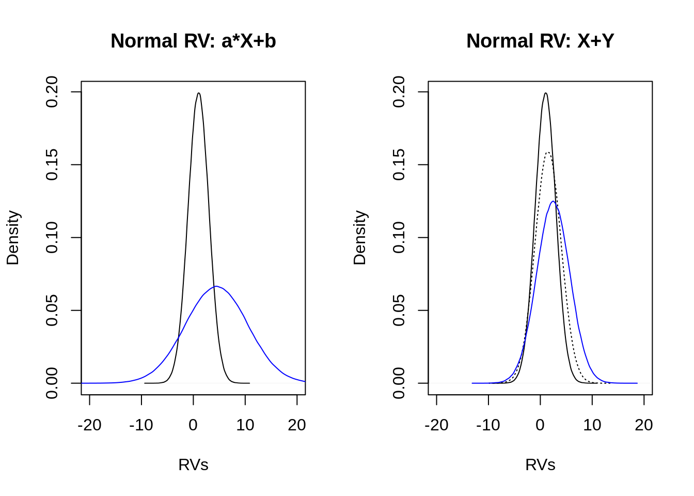

6.2 Modeling
6.2.1 Introductory example
As introductory example a coin flip experiment is considered. The question is if a particular coin is . In order to investigate this question a coin is flipped \(x\) times (=trials) and the number of success (i.e. number of “head”) \(k\) is recorded. This is repeated \(n\) times (=observations).
#this code is just copy&paste from above [it is included again for better comprehension]
#simulate coin flip data set
sample.space <- c(0, 1)
theta <- 0.5 # probability of a success (here: head)
X <- 30 # number of trials in the experiment
n <- 10 # number of observations
k <- 0 # number of heads [initialization]
## repeat experiment N-times
for (i in 1: n) {
k[i] <- sum(sample(sample.space, size = X, replace = TRUE,
prob = c(theta, 1 - theta)))
}
## show results in a tibble
coin.flip <- tibble("n" = seq(from=1, to=n, by=1),
"k" = k,
"x" = X
) %>%
print()## # A tibble: 10 x 3
## n k x
## <dbl> <dbl> <dbl>
## 1 1 13 30
## 2 2 14 30
## 3 3 13 30
## 4 4 14 30
## 5 5 18 30
## 6 6 12 30
## 7 7 14 30
## 8 8 11 30
## 9 9 16 30
## 10 10 13 30The above table shows the observed outcome, but how the underlying probability of coming up can be derived from that data set?
6.2.2 Steps of Data Analysis
The approach described here is based on (McElreath 2015, @kruschke2015). Although the approach is introduced in a Bayesian context, it can be used as a general guideline (with some caveats):
- Identify the relevant variables according to the hypothesis (Measurement scales, predicted vs. predictor variables).
- Define the descriptive model for the relevant variables.
- likelihood distribution (distribution of each outcome variable that defines the plausibility of individual observations)
- parameters (define and name all parameters of the model in order to relate the likelihood to the predictor variable(s))
- Bayesian context: Specify prior distribution(s).
Further steps that will be subject of later chapters:
- Inference and interpretation of the results.
- Model checking (Is the defined model adequate?)
In the following we are interested in the question if a certain coin is biased.
First step is to identify the relevant variables. For the coin flip experiment a coin is flipped \(n\) times, whereby each observation consists of \(x\) trials. The variable \(Y\) is dichotomous with the possible outcomes “head” and “tail”. For each observation the outcome is recorded: “0” for coming up tail and “1” for coming up head. The data are summarized for each observation. The variable \(k\) indicates the number of heads coming up in \(x\) trials.
In the second step a descriptive model for the identified variables has to be defined. An underlying probability \(\theta\) is assumed, indicating the probability of heads coming up \(p(y=1)\). The probability that the outcome is head, given a value of parameter \(\theta\), is the value of \(\theta\) (Kruschke 2015, 109). Formally, this can be written as \[p(y=1|\theta)=\theta\] As only two outcomes of \(Y\) exists, the probability that the outcome is tail is the complementary probability \(1-\theta\). Both probabilities can be combined in one probability expression: \[Pr(Y|n,\theta)=\frac{n!}{y!(n-y)!}\theta^{y}(1-\theta)^{n-y}.\] This probability distribution is called the Binomial distribution. The fracture at the beginning indicates how many ordered sequences of \(n\) outcomes a count \(y\) have, therefore the important conceptional part is the latter one.
# Plot probability distribution: What would be the expected observed number
# of "head" given the underlying prob. theta?
par(mfrow = c(2, 2))
## theta=0.2
hist(
rbinom(n = 1e6, size = 30, prob = 0.2),
xlab = "k",
main = "Binomial(1e6,0.2)",
xlim = c(0, 30),
freq = FALSE
)
## theta=0.5
hist(
rbinom(n = 1e6, size = 30, prob = 0.5),
xlab = "k",
main = "Binomial(1e6,0.5)",
xlim = c(0, 30),
freq = FALSE
)
## theta=0.8
hist(
rbinom(n = 1e6, size = 30, prob = 0.8),
xlab = "k",
main = "Binomial(1e6,0.8)",
xlim = c(0, 30),
freq = FALSE
)
When the coin is flipped only once, then the probabilty can be written as: \[Pr(Y|\theta)=\theta^{y}(1-\theta)^{1-y}.\] This special variant of the Binomial distribution is the so-called Bernoulli distribution. To see the connection to the first considerations: When the outcome “head” is observed the equation reduces to \(Pr(y=1|\theta)=\theta\) and when the outcome “tail” is observed the equation results in \(Pr(y=0|\theta)=(1-\theta).\)
Accordingly, for the introductory example it can be noted that the coin flip variable \(Y\) Binomial distribution. (Note: For Bayes’ rule the is needed. Remember, the likelihood function treats \(\theta\) as unknow and the data as known. This role of parameter is exchanged in a probability distribution.)
# calculate the Liklihood function
binomial.likelihood <- function(n, k, theta){theta^k*(1-theta)^(n-k)}
theta <- seq(from=0, to=1, by=0.01)
# Plot likelihood: What would be the expected underlying prob. theta given
# observed number of "head" in 100 observations?
par(mfrow=c(2,2))
plot(theta, binomial.likelihood(100,20,theta), xlab=expression(theta),
ylab="likelihood", type="l")
plot(theta,binomial.likelihood(100,50,theta), xlab=expression(theta),
ylab="likelihood", type="l")
plot(theta,binomial.likelihood(100,80,theta), xlab=expression(theta),
ylab="likelihood", type="l")
The third step is solely a , that is the incorporation of prior knowledge. What do we believe about the coin bias \(\theta\) before seeing the data? Assuming that no expectation about \(\theta\) exists a priori, indicating that all values of \(\theta\) between 0 and 1 are equally probable. This can be modeled by a uniform distribution or as already visualized as Beta distribution with parameters a=1 and b=1 (see following figure).
# Modelling prior knowledge "ignorance"
par(mfrow = c(1, 2))
## simulated a uniform(0,1) distribution
rethinking::dens(runif(n=1e6,min=0, max=1), ylim = c(0,1.5),
xlab=expression(theta), main="Uniform(0,1)")
## simulates a beta(1,1) distribution
rethinking::dens(rbeta(n=1e6,shape1=1,shape2=1), ylim = c(0,1.5),
xlab=expression(theta), main="Beta(1,1)")So far, the coin flip model is define conceptionally. In the following some notational considerations have to be made.
6.2.3 Notation
6.2.3.1 Textual notation
In the textual notation, first the prior assumptions (if the Bayesian perspective is taken) are described. For the coin flip example this is: \[\theta \sim Beta(1,1).\] The symbol “\(\sim\)” means “is distributed as”, thus, the above equation says before seeing the data all possible values of \(\theta\) between 0 and 1 are assumed to be equally likely.
Subsequently, the descriptive model for the data has to be defined. As already described in the section above, it is assumed that the observed data (upcoming of heads \(k\)) are distributed as Binomial distribution with given \(n\) (number of observations) and unknown \(\theta\). This relation is denoted symbollically as \[k\sim Binomial(\theta|n).\] To summarize the current model (whereby the prior knowledge is only considered from a Bayesian perspective): \[\theta \sim Beta(1,1),\] \[k\sim Binomial(\theta|n).\]
6.2.3.2 Graphical notation
When models get very complex and incorporate many parameters it can be difficult to tease out all relations between the model components. In such a situation a graphical notation of a model might be helpful. In the following the convention described in Wagenmakers and Lee’s (2014) is used: The graph structure is used to indicate dependencies between the variables, with children depending on their parents (Lee and Wagenmakers 2014). General conventions:
- Nodes - problem relevant variables,
- shaded nodes - observed variables,
- unshaded nodes - unobserved variables,
- circular nodes - continuous variables,
- square nodes - discrete variables,
- single line - stochastic dependency, and
- double line - deterministic dependency.
For the introductory example this indicates:
- relevant variables: number of trials (\(n\)), number of success (\(k\)) and probability for a success (\(\theta\)),
- observed variables: \(n\) and \(k\),
- unobserved variables: \(\theta\),
- continuous variable: \(\theta\),
- discrete variables: \(n\) and \(k\).
In the next step the dependencies have to be determined:
The number of success \(k\) depends on the probability of a success \(\theta\) as well as on the number of trials \(n\).
Finally, the graphical structure together with the textual notation can be represented:

Graphical notation Beta-Binomial Modell - One group
6.2.4 An outlook: Hierarchical models
Often data can be considered as part of an overall structure. Single observations can be modelled belonging into different groups. These groups in turn are part of a superordinate group etc. Such information are presented in a model in form of a hierarchy.
For example, consider again the coin flip experiment. The outcome of is influenced by the probability \(\theta\). Further, \(\theta\) is assumed to be distributed as Beta(1,1). Remember that the parameter a and b of a Beta-distribution can be considered in this context as: \(a=\)number of heads and \(b=\) number of tails, consequently, \(n=a+b\).
6.2.4.1 Reparameterization of a Beta distribution
Probability distributions can be described by their and (or dispersion). The of a Beta distribution is defined as:
\(\omega=\frac{a-1}{a+b-2}\),
and the concentration as:
\(\kappa=a+b.\)
The nice thing is, that the definition of the as well as of the consists solely of the parameters a and b. Therefore, it is possible to re-express the parameters of a Beta density in terms of \(\omega\) and \(\kappa\), such that:
\[Beta(a,b)=Beta\left(\omega(\kappa -2)+1, (1-\omega)(\kappa -2)+1\right).\]
Why this is useful? And what is its value in connection with hierarchical modeling?
Return back to the coin flip experiment. So far, the parameters of the prior on \(\theta\) are fixed: \(a=1\) and \(b=1\). Assume that we get further information: The manifacturing process of the coins has a bias near \(\omega\) (example taken from (Kruschke 2015)). But how to incorporate this additional knowledge in the model?
At this point, the hierarchy and the reparameterization come into play. Hierarchy because a further assumption is placed on top of the existing model and reparameterization, because we want to express the prior in terms of the mode \(\omega\).
Such that the model can be assumed as follows:

Graphical notation hierarchical Beta-Binomial Modell - One group
Now, the parameters of the hyperpriors (Gamma and Beta) are fixed, but they can be treated as parameters as well..as such hierarchical models can be created with any degree of complexity:

Graphical notation hierarchical Beta-Binomial Modell - One group
References
Kruschke, John. 2015. Doing Bayesian data analysis: A tutorial with R, JAGS, and Stan. Academic Press.
Lee, Michael D., and Eric-Jan Wagenmakers. 2014. Bayesian cognitive modeling: A practical course. Cambridge university press.
McElreath, Richard. 2015. Statistical Rethinking: A Bayesian Course with Examples in R and Stan. Chapman; Hall/CRC.